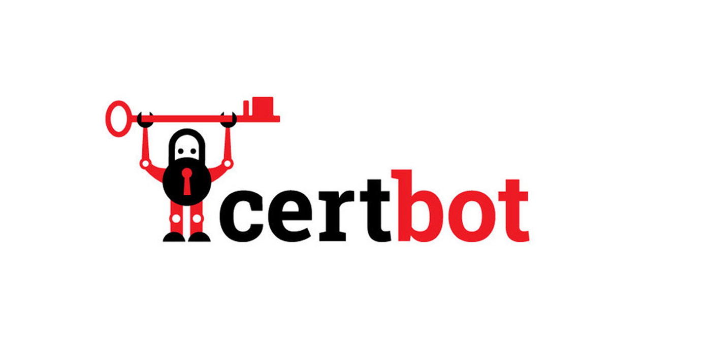
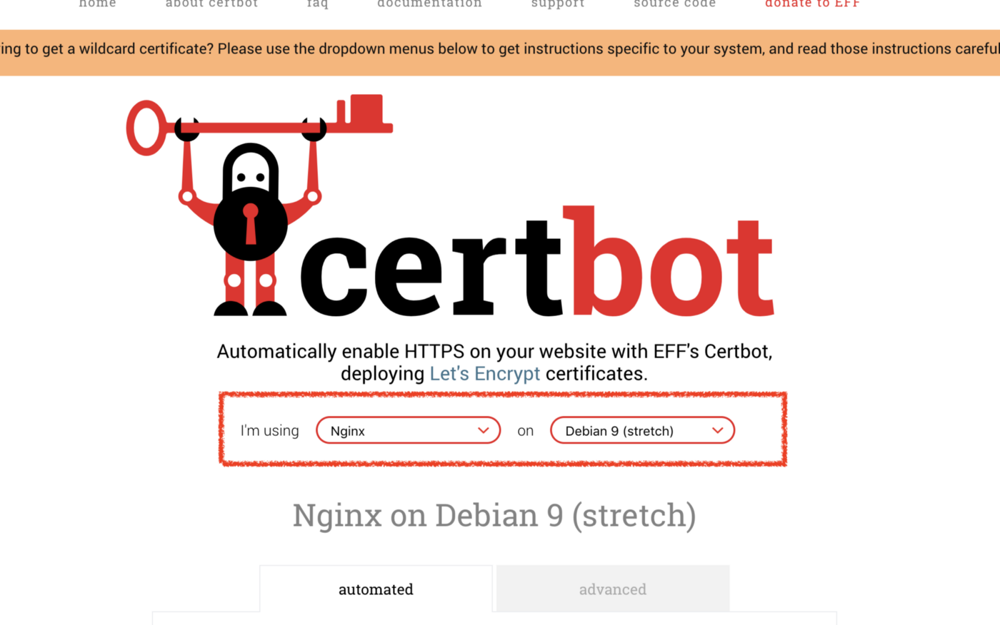
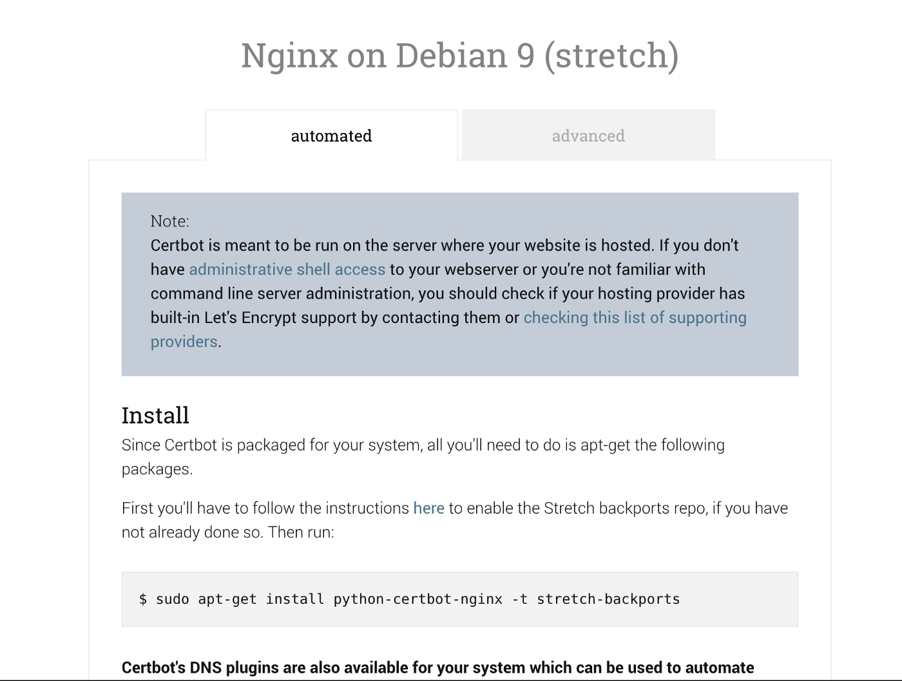
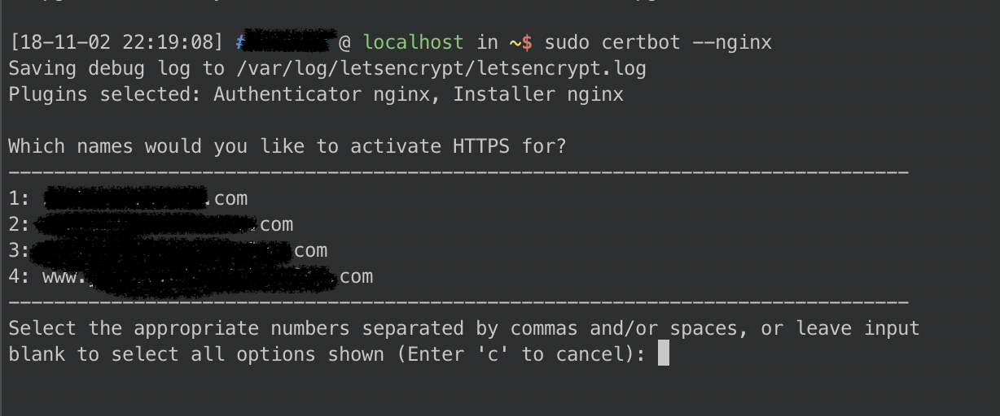
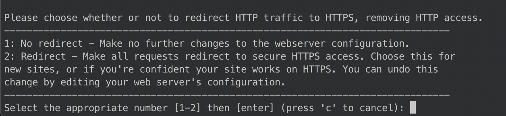
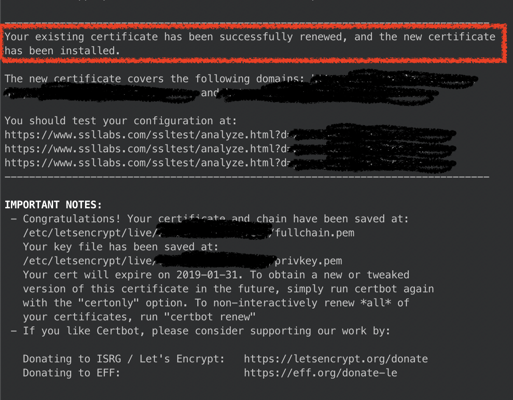

# 一個免費的 HTTPS 授權工具 — certbot
# 一鍵完成 https 不是夢

前幾天在弄自己的空間環境時，最後一步便是讓自己的服務加上 HTTPS。於是便在網路上找到了這個免費且容易使用的的 SSL/TLS 憑證。
這個服務主要是基於 Let’s Encrypt 機構 而生的，有興趣的可以查看 [wiki 對於 Let’s Encrypt 的介紹](http://Let's Encrypt - Free SSL/TLS Certificates https://letsencrypt.org/) 。
Certbot 真的非常容易使用，基本上只要依照官網的 getting start 照著做一遍，就完成了。一整個高枕無憂。
進到首頁後，第一眼看到就是要你選擇你要你的 Web Server 跟 OS。在這邊我使用 Nginx + Debian9 作為示範。

選擇完之後，就會自動往下滑動到安裝教學了。
首先要先安裝 sertbot 對 nginx 的套件，基本上就是照著把 command line 打上去即可。

安裝好之後，就可以開始設定了
Certbot 有 Nginx 的 plugin，可以支援許多的平台。安裝時使用：
sudo certbot --nginx
此指令會自動獲取憑證，並且自動寫進我們的 Nginx config 中，不需要我們手動編輯自己的 Nginx config，非常方便。
當然，如果這一切自動化感覺怕怕的，Certbot 也有提供手動設定的指令
sudo certbot --nginx certonly
在此，我們使用第一種作為示範。
certbot 會自動詢問你要使用哪個網域作為加密，什麼都不輸入則為 全選。

選擇好後，會跳出選項詢問若是使用 Http 訪問時，是否要轉址到 https。建議如果確定我們的所有資源都是運作在 https 下的話，使用第二個，否則建議選一。

最後，如果看到下面的訊息就代表完成了。

# 自動更新憑證
Certbot 的有效憑證是 90 天，因此每 90 天要更新一次。
但是更新憑證這件事情，Certbot 也幫我們想好了，我們只要一行指令，便可讓 Certbot 幫我們自動更新好憑證。
sudo certbot renew --dry-run
這就是全部了。
設定完後，突然覺得活在什麼都很方便的時代真的很好！